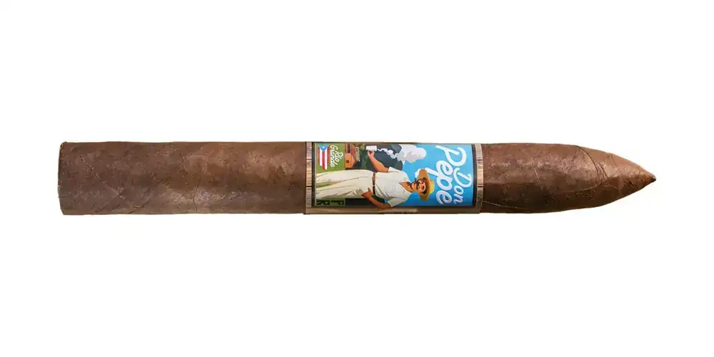

Don Pepe
De El Club del Turro · Río Grande, Puerto Rico
Capote Nicaragua; tripa Corojo de Finca Neo Jibairo. Colaboración con el Restaurante Don Pepe. Fortaleza según la ficha: suave a media.
- Capa: Sumatra
- Fortaleza: Media
- Vitolas: Torpedo 7" x 54
Fuentes: 1
Ver Don Pepe en la app, califícalo y guárdalo en Mi Hoja.